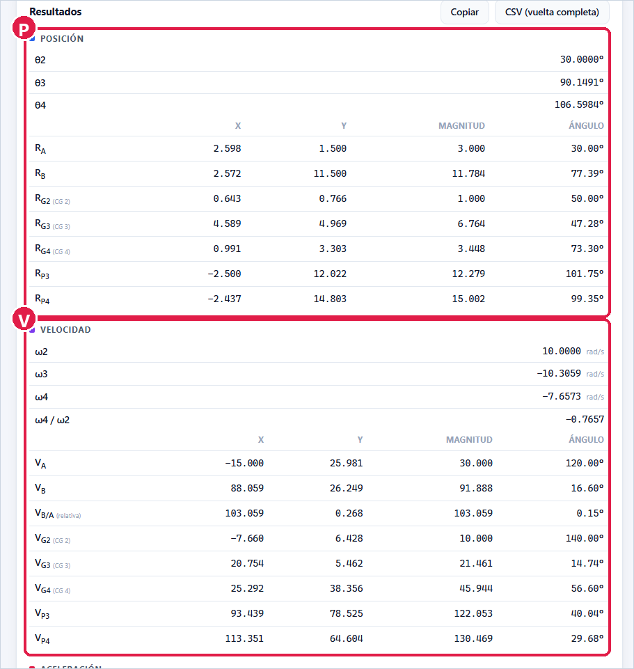
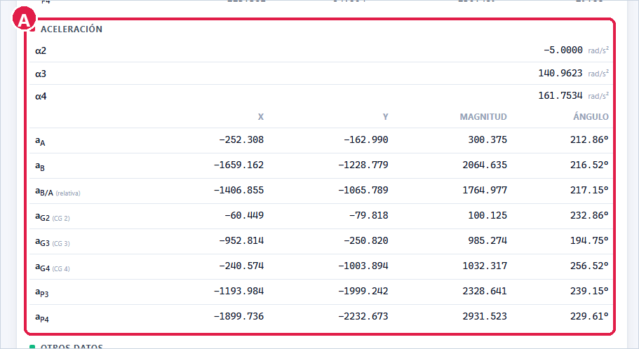
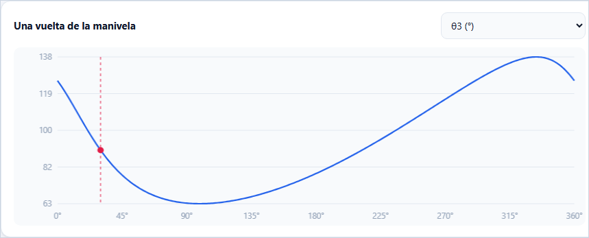

Cómo obtener la posición, la velocidad y la aceleración de todos los eslabones a partir de los datos del eslabón de entrada, en el mecanismo manivela-balancín (cuatro barras) y en el manivela-corredera.
En 30 segundos
Elija el mecanismo arriba, escriba las longitudes y los datos del eslabón 2 (θ2, ω2, α2), y lea los resultados en las tarjetas de Resultados principales. No hay botón de “calcular”: todo se recalcula solo mientras escribe.
1La pantalla
Figura 1. Pantalla principal (manivela-balancín, datos de la Tabla P11-3 fila b del Norton).
1Pestañas. Manivela-balancín, Manivela-corredera o Verificación (comparación con el libro).
2Cargar ejemplo. Llena todo con una fila (a–g) de las tablas del Norton.
3Eslabones. Longitudes a, b, c, d (o a, b y descentrado c en la corredera).
4Eslabón de entrada (2). θ2 (ángulo, con barra deslizante), ω2 y α2.
5Configuración. Abierta o cruzada: son las dos formas de armar el mecanismo.
6Resultados principales. θ3, θ4, ω3, ω4, α3, α4 (o d, ḋ, d̈ en la corredera). Aquí se ve el cambio al instante.
7Dibujo. El mecanismo en la posición calculada, con flechas de velocidad, aceleración o fuerza y la trayectoria de los puntos.
2Paso a paso: posición, velocidad y aceleración
Elija el mecanismo en las pestañas (1): Manivela-balancín para cuatro barras o Manivela-corredera.
Escriba las longitudes (3). En cuatro barras: a = manivela (eslabón 2), b = acoplador (3), c = balancín (4), d = bancada (1). Use la misma unidad en todas (pulgadas, mm, m…).
Escriba los datos del eslabón 2 (4): el ángulo θ2 en grados, la velocidad angular ω2 en rad/s y la aceleración angular α2 en rad/s². Positivo = antihorario.
Elija la configuración (5). Casi siempre es Abierta; use Cruzada si su mecanismo está armado con el acoplador y el balancín cruzados.
Lea los resultados. Arriba, en las tarjetas (6), están los valores principales. Más abajo, en la sección Resultados, está todo en detalle (Figuras 2 y 3).
Las secciones plegables son opcionalesCentros de gravedad, Puntos P y Dinámica · fuerzas solo hacen falta si necesita la velocidad o la aceleración de un centro de gravedad o de un punto del acoplador, o las fuerzas y el par motor. Para posición, velocidad y aceleración de los eslabones puede ignorarlas.
3Dónde leer cada resultado
Debajo del dibujo está la sección Resultados, organizada en Posición (P), Velocidad (V) y Aceleración (A). Cada bloque tiene primero los valores angulares de los eslabones y luego los vectores de los puntos, con sus componentes x, y, la magnitud y el ángulo.

Figura 2. Bloques de posición (P) y velocidad (V).
PPosición: θ2, θ3, θ4 y la posición de los puntos A, B, los centros de gravedad G y los puntos P, medida desde O2.
VVelocidad: ω2, ω3, ω4 y las velocidades de A, B, la relativa B/A, los G y los P.

Figura 3. Bloque de aceleración (A): α2, α3, α4 y las aceleraciones de los puntos.
4“Cambio un dato y lo demás no cambia”
Si le pasa esto, revise estos puntos en orden:
Mire las tarjetas de “Resultados principales”, arriba a la derecha. Ahí cambian los números en cuanto escribe. (En una versión anterior el dibujo se hacía muy alto y empujaba los resultados fuera de la pantalla; ya está corregido.)
Recargue la página con Ctrl + F5 (en el celular, cierre y vuelva a abrir la pestaña) para asegurarse de tener la última versión.
Revise si el campo quedó con borde rojo: el número no es válido. Escriba solo números, con punto decimal (2.5).
Lea el mensaje rojo debajo de los datos, si aparece: el mecanismo no se puede armar con esas longitudes en ese ángulo.
Revise qué cambió. No todo depende de todo; algunos resultados deben quedar iguales. Por ejemplo, ω2 no cambia los ángulos θ3 y θ4. La tabla siguiente lo resume.
¿Qué resultados cambian cuando cambio cada dato?
Si cambio…
Posición (θ3, θ4, puntos)
Velocidad (ω3, ω4, V)
Aceleración (α3, α4, a)
Fuerzas (T12, F)
Longitudes a, b, c, d
sí
sí
sí
sí
Ángulo θ2
sí
sí
sí
sí
Abierta / cruzada
sí
sí
sí
sí
Velocidad ω2
no
sí
sí
sí
Aceleración α2
no
no
sí
sí
Centros de gravedad (Rg, δ)
solo G2, G3, G4
solo VG
solo aG
sí
Puntos P (RP, δRP)
solo P3, P4
solo VP
solo aP
sí
Masas, inercias, cargas
no
no
no
sí
¿Por qué ω2 no cambia la posición?
La posición (θ3, θ4) es pura geometría: solo depende de las longitudes y de θ2. La velocidad depende además de ω2, y la aceleración depende de ω2 y de α2. Por eso, si duplica ω2, se duplican ω3 y ω4, pero θ3 y θ4 siguen iguales. Es lo esperado, no un error.
5Ejemplo resuelto: manivela-balancín
Datos de la Tabla P11-3, fila b, del Norton (se cargan con Cargar ejemplo → Norton Tabla P11-3 · fila b):
Dato
Valor
Dato
Valor
a (eslabón 2)
3
θ2
30°
b (eslabón 3)
10
ω2
10 rad/s
c (eslabón 4)
12
α2
−5 rad/s²
d (eslabón 1)
6
Configuración
abierta
Resultado
Programa
Libro
θ3 (posición del acoplador)
90.149°
90.15°
θ4 (posición del balancín)
106.598°
106.60°
ω3
−10.306 rad/s
−10.31 rad/s
ω4
−7.657 rad/s
−7.66 rad/s
α3
140.962 rad/s²
140.96 rad/s²
α4
161.753 rad/s²
161.75 rad/s²
Pruébelo
Con este ejemplo cargado, cambie θ2 de 30 a 60: las tarjetas pasan a θ3 = 69.41° y θ4 = 94.70°, con ω3 = −3.998 y ω4 = −0.957 rad/s. Cambie después ω2 de 10 a 20: θ3 y θ4 no cambian, mientras que ω3 y ω4 se duplican (−7.997 y −1.915 rad/s).
6Manivela-corredera
En la pestaña Manivela-corredera los datos son a (manivela), b (biela) y c (descentrado de la guía; 0 si la guía pasa por O2). En lugar de θ4 se obtiene la posición de la corredera d, su velocidad ḋ y su aceleración d̈.
Figura 4. Manivela-corredera con la Tabla P11-1 fila b: a = 3, b = 10, c = 1, θ2 = 30°, ω2 = 15 rad/s, α2 = −5 rad/s².
Resultado
Programa
Libro
θ3 (biela)
177.134°
177.13°
ω3
−3.902 rad/s
−3.90 rad/s
α3
34.331 rad/s²
34.33 rad/s²
Velocidad de la corredera ḋ
−24.451
24.45 ∠ 180°
Aceleración de la corredera d̈
−711.967
711.97 ∠ 180°
θ3 cerca de 180° es correcto
En la corredera, el libro mide θ3 sobre el vector que va de B hacia A. Como la corredera está a la derecha de la manivela, ese vector apunta hacia la izquierda y θ3 queda cerca de 180°.
7Ver una vuelta completa
Al final de la página hay una gráfica que muestra cómo varía una magnitud mientras la manivela da una vuelta (θ2 de 0° a 360°). Elija la magnitud en el menú (θ3, ω4, α3, d̈, T12…). La línea roja marca el θ2 actual; al pasar el ratón se lee el valor y al hacer clic se lleva el mecanismo a ese ángulo. El botón ▶ Animar hace girar la manivela, y CSV (vuelta completa) descarga todos los valores para abrirlos en Excel.

Figura 5. θ3 durante una vuelta de la manivela.
8De dónde salen los números
El programa usa las ecuaciones de Norton, Diseño de Maquinaria, 4a Ed., las mismas de las diapositivas del curso.
Manivela-balancín
K1 = d/a · K2 = d/c · K3 = (a² − b² + c² + d²)/(2ac) · K4 = d/b · K5 = (c² − d² − a² − b²)/(2ab)
A = cos θ2 − K1 − K2 cos θ2 + K3 · B = −2 sen θ2 · C = K1 − (K2 + 1) cos θ2 + K3
D = cos θ2 − K1 + K4 cos θ2 + K5 · E = −2 sen θ2 · F = K1 + (K4 − 1) cos θ2 + K5
θ4 = 2 arctan[(−B ∓ √(B² − 4AC)) / 2A] θ3 = 2 arctan[(−E ∓ √(E² − 4DF)) / 2D] (− abierta, + cruzada)
ω3 = (a ω2 / b) · sen(θ4 − θ2) / sen(θ3 − θ4) ω4 = (a ω2 / c) · sen(θ2 − θ3) / sen(θ4 − θ3)
α3 = (CD − AF)/(AE − BD) α4 = (CE − BF)/(AE − BD) (con los A…F de aceleración, ec. 7.12)
Manivela-corredera
θ3 = arcsen[−(a sen θ2 − c)/b] + π (abierta) d = a cos θ2 − b cos θ3
ω3 = (a/b) (cos θ2 / cos θ3) ω2 ḋ = −a ω2 sen θ2 + b ω3 sen θ3
α3 = (a α2 cos θ2 − a ω2² sen θ2 + b ω3² sen θ3) / (b cos θ3)
d̈ = −a α2 sen θ2 − a ω2² cos θ2 + b α3 sen θ3 + b ω3² cos θ3
La velocidad y la aceleración de cualquier punto se obtienen con números complejos: V = j·ω·R·ejθ y a = (j·α − ω²)·R·ejθ, sumando la del punto de apoyo del eslabón.
9Convenciones y símbolos
Símbolo
Significado
θ
Ángulo del eslabón respecto al eje X, en grados, antihorario positivo
ω
Velocidad angular, rad/s (+ antihoraria)
α
Aceleración angular, rad/s²
R, V, a
Posición, velocidad y aceleración de un punto
B/A
Movimiento de B relativo a A
Punto
Qué es
O2, O4
Pivotes fijos de la bancada
A
Unión manivela–acoplador
B
Unión acoplador–balancín (o corredera)
G2, G3, G4
Centros de gravedad
P3, P4
Puntos de interés en los eslabones 3 y 4
Los ángulos de salida están entre 0° y 360°. Un resultado de 350° equivale a −10°.
¿Quiere comprobar que el programa calcula bien?
La pestaña Verificación Norton recalcula las 7 filas de las Tablas P11-1, P11-2 y P11-3 del libro y las compara valor por valor: 127 de 133 coinciden exactamente y los otros 6 son erratas del libro, explicadas una por una.